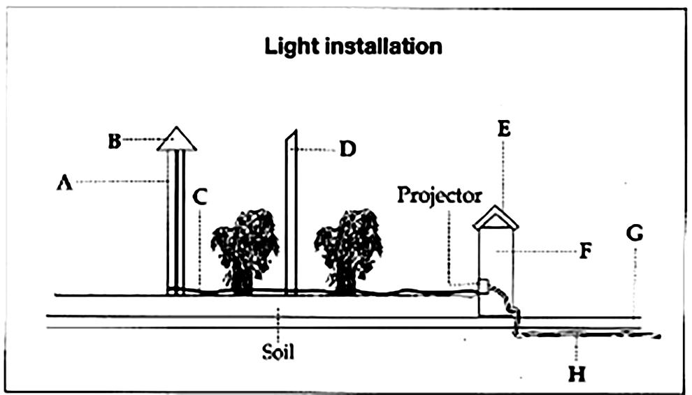

Listening Test: Nhấn vào từng Part bên dưới. Mỗi Part sẽ có một file nghe riêng biệt.
Questions 1-10
Write NO MORE THAN ONE WORD AND/OR A NUMBER for each answer.
Costwise Car Hire
Example: Number of offices in Sydney: …… 3 ……
- Booking reference number: 1.
- Office just by 2. terminal.
- Opening hours: 3.
- After-hours charge: 4. $
- Cheapest model of car available: 5.
- Information needed when booking: 6. number
- Length of hire period: 7.
- Reduce cost by driving under 8. km per week.
- Insurance does not cover: 9.
- After hours put keys in box near the office on the 10.
Questions 11-15
Write the correct letter, A, B or C, next to questions 11-15.
A. foreign languages
B. willingness to travel abroad
C. professional qualification
conference organizer
catering manager
housekeeper
fitness centre staff
reservations assistant
Questions 16-20
Choose FIVE answers from the box and write the correct letter, A-G, next to questions 16-20.
B. names of referees
C. work permit
D. recruitment seminar
E. evidence of qualifications
F. conditions of employment
G. initial interview
RECRUITMENT PROCEDURES
↓
receive personal code and check 16.
↓
download application form
↓
send in form and attach 17.
↓
receive reply and confirm 18.
↓
send in 19.
↓
attend 20.
Questions 21-22
Choose TWO letters, A-E.
Which TWO possible objections to a roof garden are discussed?
21. 22.
Questions 23-24
Choose TWO letters, A-E.
Which TWO recent developments in roof-garden building are mentioned?
23. 24.
Questions 25-30
Label the diagram below. Write the correct letter A-H next to questions 25-30.

Questions 31-36
Write NO MORE THAN TWO WORDS for each answer.
The Argus system
- Developed by Rob Holman in N. Carolina with other researchers.
- Research is vital for understanding of 31. .
- Matches information from under the water with information from 32. .
- According to S. Jeffress Williams, useful because can make observations during a 33. .
Dr Holman’s sand collection
- Dr H. has samples from every 34. .
- Used in teaching students of 35. .
- e.g. US East Coast display: grains from south are small, light-coloured and 36. in shape.
Questions 37-40
Complete the flow-chart below. Write NO MORE THAN THREE WORDS for each answer.
↓
store in plastic bags
↓
write date and place, using a 38.
↓
Dry sample on 39.
↓
transfer to container
↓
add at least one 40. immediately
READING PASSAGE 1
Anxiety
Anxiety is a common experience that can be a useful motivator or even lifesaver in situations that are objectively dangerous. However, when the anxiety is out of proportion to the danger inherent in a given situation, is persistent and is markedly disabling, an anxiety disorder can be developed.
Anxiety is an emotion that all people experience from time to time, and we do that for very good reasons. It has been built into us; we have inherited it from our evolutionary past, because, in general, anxiety has a survival function. If there is a real danger for a primitive man, then anxiety kicks in in an adaptive way. We freeze, we stop doing whatever we were doing, we devote all of your attention to the danger, and our bodies react with a big release of adrenalin, an increase in blood flow to the muscles, getting us ready to run as fast as we can or fight as fiercely as we can.
So some anxiety is adaptive, not only for primitive man, but in modern society as well. It helps us to focus on things when we have deadlines and, if someone is driving too fast when we cross the road, it helps us to jump out of the way quickly. So, there is nothing wrong with anxiety in general, and in fact, we would have difficulties if we did not experience it to some extent, but of course it can get problematic if the danger is one that is imagined rather than real, or the danger is something that is exaggerated. In those cases, particularly if the perceived danger is out of proportion to the real danger, and it is persistent and disabling, then there is a danger of an anxiety disorder. About 17 per cent of the population will have an anxiety disorder at some stage in their life.
Anxiety can be caused in a variety of different ways, but any mental disorder is always difficult to diagnose. Scientists are looking at what role genes play in the development of these disorders and are also investigating the effects of environmental factors, such as pollution, physical and psychological stress, and diet. Several parts of the brain are key actors in the production of fear and anxiety. Using brain imaging technology and neurochemical techniques, scientists have discovered that the amygdala plays a significant role in most anxiety disorders. By learning more about how the brain creates fear and anxiety, scientists may be able to devise better treatments for these disorders.
Anxiety disorders are a very costly problem in terms of society. Some published figures show that, in the US, it cost $60 billion in one year in terms of lost productivity and in terms of excessive medical investigations that many people with anxiety seek, often thinking they have a physical problem.
Given all of this, it is rather worrying that anxiety also has a rather low treatment-seeking rate. Only 10 per cent of people with an anxiety disorder will seek treatment. That seems to be largely because people do not realise there are effective treatments available. Most people tend to think they have had it for most of their lives, so it is just their personality and they cannot change their personality, and so they feel rather hopeless about it.
The first psychotherapy treatment that was shown to be effective was exposure therapy, which essentially encourages people in a graded way to go into their feared situations and stay in them as long as they can and build up their confidence that way. Often, the therapist will accompany the person to a feared situation to provide support and guidance. Group cognitive behaviour therapy has also been shown to be effective. This is a talking therapy that helps people to understand the link between negative thoughts and mood and how altering their behaviour can enable them to manage anxiety and feel in control.
There are, of course, drugs that can help people with anxiety. Medication will not cure an anxiety disorder, but it can keep it under control while the person receives psychotherapy. The principal medications used for anxiety disorders are antidepressants, anti-anxiety drugs, and beta-blockers to control some of the physical symptoms. With proper treatment, many people with anxiety disorders can lead normal, fulfilling lives.
There is plenty of evidence that exercise can help with anxiety problems. When stress affects the brain, with its many nerve connections, the rest of the body feels the impact as well. Exercise and other physical activity produce endorphins, which are chemicals in the brain that act as natural painkillers. In addition to this, getting physically tired can help people fall asleep faster and have deeper and more relaxing sleep. As many people suffering from anxiety often have problems with insomnia, just the ability to get a good night’s rest can change people’s whole perspectives.
Anxiety is a normal, but highly subjective, human emotion. While normal anxiety serves a beneficial and adaptive purpose, anxiety can also become the cause of tremendous suffering for millions of people. It is important that people recognise excessive anxiety in themselves as soon as possible, as treatment can be very successful and living untreated can be a misery.
Questions 1-3
Write the correct letter (A – E) in answer boxes 1-3 on your answer sheet.
B. never have to deal with anxiety.
C. lead to unhelpful levels of anxiety.
D. experience anxiety at some point.
E. increase the possibility of physical disease.
Experiencing small doses of anxiety can
Imagining or exaggerating problems can
Nearly one in five people can
Questions 4-6
Answer the questions below. Write NO MORE THAN THREE WORDS AND/OR A NUMBER from the text for each answer.
Which area of the brain have scientists identified as being significant in anxiety problems?
What proportion of people look for treatment for their anxiety?
What part of themselves do most people blame for their anxiety?
Questions 7-13
Complete the table below. Write NO MORE THAN TWO WORDS from the text for each answer.
| Treatment for Anxiety | |
|---|---|
| Exposure Therapy | Patients face their fears in a 7. fashion, often with their 8. |
| Group Cognitive Behaviour Therapy | A talking therapy. It explores the links between 9. and feelings. It explores how changing people's 10. can help them regain control. |
| Drugs | These cannot cure people, but they can help in conjunction with 11. . |
| Exercise | By creating 12. , the body can help dull the pain of anxiety. It can allow a good sleep for people who suffer from the 13. caused by their anxiety. |
READING PASSAGE 2
The Grand Banks
Paragraph A
The Grand Banks is a large area of submerged highlands southeast of Newfoundland and east of the Laurentian Channel on the North American continental shelf. Covering 93,200 square kilometres, the Grand Banks are relatively shallow, ranging from 25 to 100 meters in depth. It is in this area that the cold Labrador Current mixes with the warm waters of the Gulf Stream. The mixing of these waters and the shape of the ocean bottom lifts nutrients to the surface and these conditions created one of the richest fishing grounds in the world. Extensive marine life flourishes in the Grand Banks, whose range extends beyond the Canadian 200-mile exclusive economic zone (EEZ) and into international waters. This has made it an important part of both the Canadian and the high seas fisheries, with fishermen risking their lives in the extremely inhospitable environment consisting of rogue waves, fog, icebergs, sea ice, hurricanes, winter storms and earthquakes.
Paragraph B
While the area’s ‘official’ discovery is credited to John Cabot in 1497, English and Portuguese vessels are known to have first sought out these waters prior to that, based upon reports they received from earlier Viking voyages to Newfoundland. Several navigators, including Basque fishermen, are known to have fished these waters in the fifteenth century. Some texts from that era refer to a land called Bacalao, ‘the land of the codfish’, which is possibly Newfoundland. However, it was not until John Cabot noted the waters’ abundance of sea life that the existence of these fishing grounds became widely known in Europe. Soon, fishermen and merchants from France, Spain, Portugal and England developed seasonal inshore fisheries producing for European markets. Known as ‘dry’ fishery, cod were split, salted, and dried on shore over the summer before crews returned to Europe. The French pioneered ‘wet’ or ‘green’ fishery on the Grand Banks proper around 1550, heavily salting the cod on board and immediately returning home.
Paragraph C
The Grand Banks were possibly the world’s most important international fishing area in the nineteenth and twentieth centuries. Technological advances in fishing, such as sonar and large factory ships, including the massive factory freezer trawlers introduced in the 1950’s, led to overfishing and a serious decline in the fish stocks. Based upon the many foreign policy agreements Newfoundland had entered into prior to its admittance into the Canadian Confederation, foreign fleets, some from as far away as Russia, came to the Grand Banks in force, catching unprecedented quantities of fish.
Paragraph D
Between 1973 and 1982, the United Nations and its member states negotiated the Third Convention of the Law of the Sea, one component of which was the concept of nations being allowed to declare an EEZ. Many nations worldwide-declared 200-nautical mile EEZ’s, including Canada and the United States. On the whole, the EEZ was very well received by fishermen in eastern Canada, because it meant they could fish unhindered out to the limit without fear of competing with the foreign fleets. During the late 1970’s and early 1980s, Canada’s domestic offshore fleet grew as fishermen and fish processing companies rushed to take advantage. It was during this time that it was noticed that the foreign fleets now pushed out to areas of the Grand Banks off Newfoundland outside the Canadian EEZ. By the late 1980’s, dwindling catches of Atlantic cod were being reported throughout Newfoundland and eastern Canada, and the federal government and citizens of coastal regions in the area began to face the reality that the domestic and foreign overfishing had taken its toll. The Canadian government was finally forced to take drastic action in 1992, when a total moratorium was declared indefinitely for the northern cod.
Paragraph E
Over the last ten years, it has been noted that cod appear to be returning to the Grand Banks in small numbers. The reasons for this fragile recovery are still unknown. Perhaps, the damage done by trawlers is not permanent and the marine fauna and ecosystems can rebuild themselves if given a prolonged period of time without any commercial activity. Either way, the early stage recovery of the Grand Banks is encouraging news, but caution is needed, as, after nearly twenty years of severe limitations, cod stocks are still only at approximately ten per cent of 1960’s levels. It is hoped that in another ten to twenty years, stocks may be close to a full recovery, although this would require political pressure to maintain strict limitations on commercial fishing. If cod do come back to the Grand Banks in meaningful numbers, it is to be hoped that the Canadians will not make the same mistakes again.
Paragraph F
Further riches have now been found in the Grand Banks. Petroleum reserves have been discovered and a number of oil fields are under development in the region. The vast Hibernia oil field was discovered in 1979, and, following several years of aborted start-up attempts, the Hibernia megaproject began construction of the production platform and gravity base structures in the early 1990’s. Production commenced on November 17, 1997, with initial production rates in excess of 50,000 barrels of crude oil per day from a single well. Hibernia has proven to be the most prolific oil well in Canada. However, earthquake and iceberg activity in the Grand Banks pose a potential ecological disaster that could devastate the fishing grounds that are only now starting to recover.
Questions 14-20
Which paragraph contains the following information?
Write your answers A-F in boxes 14-20 on your answer sheet.
Many countries could legally fish Newfoundland waters because of treaties Newfoundland had made before becoming part of Canada.
The establishment of the EEZ did not stop over-fishing in the Grand Banks.
Natural disasters could cause oil to destroy what is left of the Grand Banks ecosystem.
The original amount of fish in the Grand Banks was due to different temperature waters mixing.
East Canadian fishermen were generally happy with the establishment of the Canadian EEZ.
Grand Banks’ cod stocks are still 90 per cent lower than what they were in the 1960’s.
The French were the first to prepare the cod on board their ships before going back to France.
Questions 21-23
Choose the correct letter A, B, C or D.
The first English fishermen to come to the Grand Banks to fish...
B. were sent word about the fishery from the first American colonists.
C. acted on information from previous Viking expeditions.
D. discovered the fishery themselves while exploring.
John Cabot’s reports of the Grand Banks...
B. meant the fishery was well known in Europe.
C. led to fighting between rival fishing fleets.
D. were not immediately publicised, so that English fishermen could benefit.
The establishment of the Canadian EEZ...
B. was not ratified by the United Nations.
C. temporarily stopped the over-fishing of cod in the Grand Banks.
D. meant Canadian fishermen were excluded from fishing the Grand Banks.
Questions 24-26
Do the following statements agree with the information given in the text? Write TRUE, FALSE, or NOT GIVEN.
Even now, cod stocks have shown no signs of recovery in the Grand Banks.
Initial efforts to extract oil from the Grand Banks’ Hibernia oil field were unsuccessful.
Oil exploration companies have to follow strict safety controls imposed by the Canadian government.
READING PASSAGE 3
An Aging Population
People are living longer and, in some parts of the world, healthier lives. This represents one of the crowning achievements of the last century, but also a significant challenge. Longer lives must be planned for. Societal aging may affect economic growth and lead to many other issues, including the sustainability of families, the ability of states and communities to provide resources for older citizens, and international relations. The Global Burden of Disease, a study conducted by the World Health Organization, predicts a very large increase in age-related chronic disease in all regions of the world. Dealing with this will be a significant challenge for all countries’ health services.
Population aging is driven by declines in fertility and improvements in health and longevity. In more developed countries, falling fertility beginning in the early 1900’s has resulted in current levels being below the population replacement rate of two live births per woman. Perhaps the most surprising demographic development of the past 20 years has been the pace of fertility decline in many less developed countries. In 2006, for example, the total fertility rate was at or below the replacement rate in 44 less developed countries.
One central issue for policymakers in regard to pension funds is the relationship between the official retirement age and actual retirement age. Over several decades in the latter part of the 20th century, many of the more developed nations lowered the official age at which people become fully entitled to public pension benefits. This was propelled by general economic conditions, changes in welfare philosophy, and private pension trends. Despite the recent trend toward increased workforce participation at older ages, a significant gap between official and actual ages of retirement persists. This trend is emerging in rapidly aging developing countries as well. Many countries already have taken steps towards much-needed reform of their old-age social insurance programs. One common reform has been to raise the age at which workers are eligible for full public pension benefits. Another strategy for bolstering economic security for older people has been to increase the contributions by workers. Other measures to enhance income for older people include new financial instruments for private savings, tax incentives for individual retirement savings, and supplemental occupational pension plans.
As life expectancy increases in most nations, so do the odds of different generations within a family coexisting. In more developed countries, this has manifested itself as the ‘beanpole family,’ a vertical extension of family structure characterised by an increase in the number of living generations within a lineage and a decrease in the number of people within each generation. As mortality rates continue to improve, more people in their 50’s and 60’s will have surviving parents, aunts, and uncles. Consequently, more children will know their grandparents and even their great-grandparents, especially their great-grandmothers. There is no historical precedent for a majority of middle-aged and older adults having living parents.
As the World Health Organisation study, The Global Burden of Disease, predicts that in a few decades the loss of health and life worldwide will be greater from non-communicable or chronic diseases than from infectious diseases, childhood diseases, and accidents. The study estimates that today, noncommunicable diseases account for 85 per cent of the burden of disease in high-income countries and a surprising 44 per cent of the burden of disease in low- and middle-income countries. Noncommunicable diseases already account for as much of the burden of disease in low- and middleincome countries as all communicable diseases, maternal and perinatal conditions, and nutritional conditions. By 2030, according to projections, the share of the burden attributed to noncommunicable diseases in low- and middle-income countries will reach 54 per cent, while the share attributed to communicable diseases will fall to 32 per cent. If we restrict attention to older ages, noncommunicable diseases already account for more than 87 per cent of the burden for the over-60 population in low-, middle-, and high-income countries. The critical issue for low- and middle-income countries is how to mobilise and allocate resources to address non-communicable diseases, as they continue to struggle with the continued high prevalence of communicable diseases.
Of course, a significant jump in disability numbers has accompanied the increase in longevity. Because countries age at different paces, it is possible for the elements of production – labour and capital – to flow across national boundaries and mitigate the impact of population aging. Studies predict that, in the near term, surplus capital will flow from Europe and North America to emerging markets in Asia and Latin America, where the population is younger and cheaper and supplies of capital relatively low. In another 20 years, when the baby boom generation in the West has mostly retired, capital will most likely flow in the opposite direction. However, these studies rest on the uncertain assumption that capital will flow easily across national boundaries.
Despite the weight of scientific evidence, the significance of population aging and its global implications have yet to be wholly appreciated. There is a need to raise awareness about not only global aging issues, but also the importance of rigorous cross-national scientific research and policy dialogue that will help us address the challenges and opportunities of an aging world. Preparing financially for longer lives and finding ways to reduce aging-related disability should become national and global priorities. Experience shows that for nations, as for individuals, it is critical to address problems sooner rather than later. Waiting significantly increases the costs and difficulties of addressing these challenges.
Questions 27-33
Write NO MORE THAN THREE WORDS for each answer.
An Aging Population
The longer lives of people of today must be prepared for. The longer lives will affect economics, family life, old age care and health services.
The aging population has been caused by a drop in fertility, improvements in health and 27. ; the former is surprisingly seen in many 28. .
One key area to consider is the age for retirement benefits to be paid – this has changed a lot recently in 29. , due to various conditions and trends.
A lot of 30. is required in many countries and some have already done this – usually by raising the official pension age or raising the 31. of people still working. Other new financial instruments have also been launched.
Longer life expectancy will also lead to different family 32. living with each other more. There has been no previous 33. of such a change in family demographics.
Questions 34-39
Do the following statements agree with the views of the writer of the text? Write YES, NO, or NOT GIVEN.
It is no shock that low- and middle-income countries have experienced a significant rise in non-communicable diseases.
While the numbers of people with chronic diseases have increased around the world, the numbers of people with disability problems have reduced.
It is theorised that money invested short-term in Asia will later be reinvested back in the West.
It is predicted that problems in the international flow of capital will lead to armed conflict between some countries.
All the effects of population aging around the world have still not been fully realised.
It would be better to wait a while to see how the situation develops, as fast decisions could create problems in the future.
Question 40
Choose the correct letter, A, B, C or D.
What is the writer’s purpose in Reading Passage 3?
B. To provide an overview of the causes and effects of the world’s aging population.
C. To provide potential suggestions on how to prevent the world’s aging population from increasing.
D. To provide a historical analysis of the causes of today’s aging population.
WRITING TASK 2
You should spend about 40 minutes on this task.
Nowadays young people are admiring media and sports stars, even though they do not set a good example. Do you think this is a positive or negative development?
Write at least 250 words.
Submit Your Essay Below
* Điền thông tin và viết bài trực tiếp vào biểu mẫu dưới đây để gửi bài cho giáo viên.